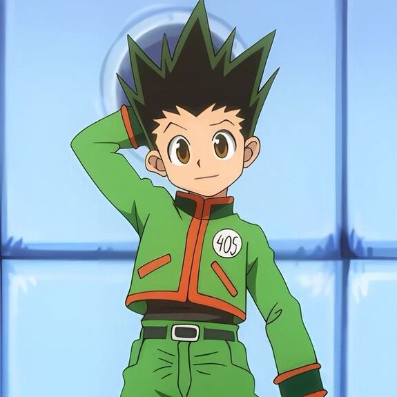
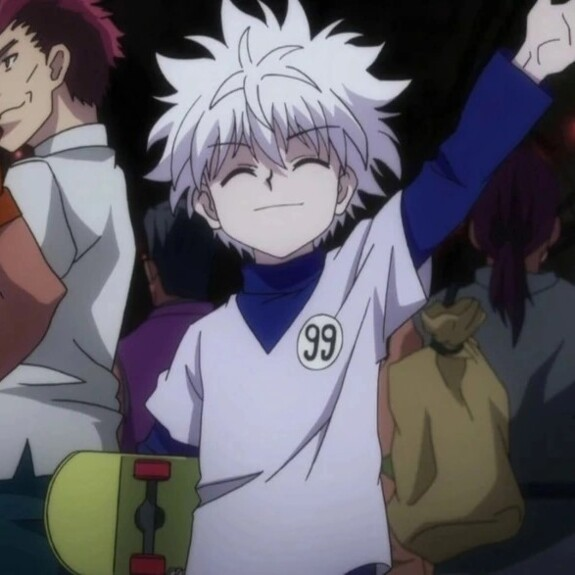
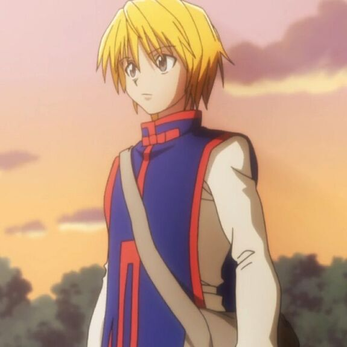
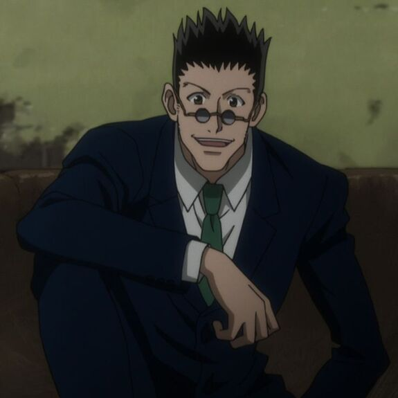

-
Gon Freecss, o Caçador Determinado
Descrição: Gon é um Caçador com grande força e determinação. Usando seu Nen, ele pode liberar a "Jajanken", um ataque poderoso baseado em pedra, papel e tesoura, com diferentes efeitos: Pedra (forte ataque físico), Papel (defesa) e Tesoura (ataque rápido em múltiplos inimigos). Ele é um estrategista instintivo, sempre pronto para proteger seus amigos.
ATK/ 3000 ATK/ 2300 -
Killua Zoldyck, o Assassino Rápido
Killua é um mestre do assassinato, com habilidades de velocidade e reflexos impressionantes. Graças ao seu Nen, ele pode usar a "Godspeed", uma habilidade que aumenta sua velocidade a níveis sobre-humanos e permite ataques elétricos devastadores. Com sua inteligência afiada e agilidade, ele é capaz de dominar a batalha com rapidez e precisão, sempre protegendo seus amigos com coragem silenciosa.
ATK/ 3200 ATK/ 2500 -
Kurapika, o Caçador dos Kurta
Kurapika é o último membro vivo do clã Kurta, com habilidades de Nen baseadas em correntes poderosas. Quando entra em seu estado de vingança, ele ganha um aumento significativo de força e defesa, tornando-se um adversário formidável. Sua inteligência estratégica e habilidade de prender inimigos com suas correntes fazem dele um combatente imbatível, focado em sua missão de justiça.
ATK/ 3800 ATK/ 3500 -
Leorio Paradinight, o Médico Ambicioso
Leorio é um aspirante a médico com um forte senso de justiça e determinação. Embora não seja tão forte quanto seus amigos, ele compensa com sua resistência e habilidades de Nen voltadas para cura. Sempre disposto a ajudar seus aliados, Leorio usa sua coragem e estratégia para apoiar o time, mesmo nos momentos mais difíceis.
ATK/ 1800 ATK/ 2000